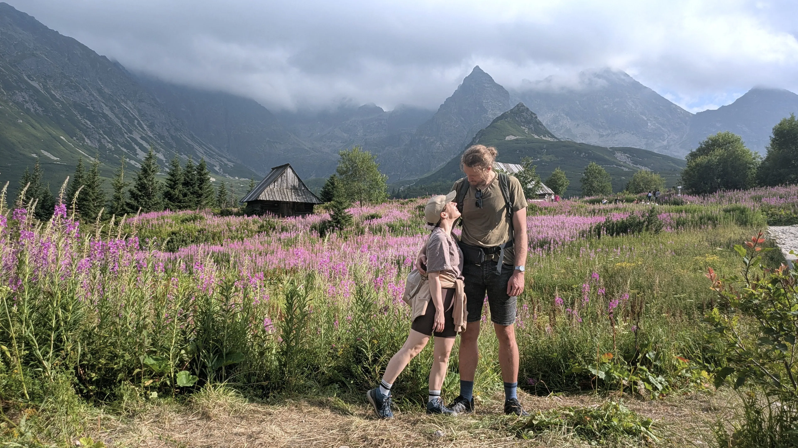

ROZPOCZNĄ WSPÓLNĄ DROGĘ ŻYCIA,
ZAWIERAJĄC ZWIĄZEK MAŁŻEŃSKI.
30 MAJA 2026 ROKU
Pozostało do ślubu:

SERDECZNIE ZAPRASZAMY
NA NASZĄ UROCZYSTOŚĆ ZAŚUBIN,
KTÓRA ODBĘDZIE SIĘ W SOBOTĘ
30 MAJA 2026 ROKU
O GODZ. 16:00
W KOŚCIELE POD WEZMWANIEM ŚW. ANTONIEGO PADEWSKIEGO
PRZY UL. BORKOWSKIEJ 1 W STAREJ MIŁOSNEJ
Kościół św. Antoniego Padewskiego
ul. Borkowska 1
05-077 Warszawa, Stara Miłosna
SALOMEA
call +48 604 446 630
mail salomea.grodzicka@gmail.com
TOMASZ
call +48 500 149 899
mail tprzedlacki@gmail.com
Z całego serca prosimy o zrezygnowanie z wręczania alkoholu. Zamiast tradycyjnych bukietów chętnie przyjmiemy kwiaty doniczkowe. Dodatkowo zachęcamy do wsparcia aktywnych działań charytatywnych:
Opieka paliatywna w domu dla dorosłych i dzieci. Pediatryczna domowa opieka paliatywna to opieka medyczna, psychologiczna, socjalna i duchowa nad nieuleczalnie chorymi dziećmi i ich rodzinami w ich domach.
Nr konta: 33 1240 1082 1111 0000 0428 2080
KRS: 0000097123
Rehabilitacja i wsparcie dzieci z Mózgowym Porażeniem Dziecięcym i ich rodzin.
Nr konta: 20 1240 2702 1111 0000 3041 4651
KRS: 0000098165
lub innej wybranej przez Was inicjatywy...